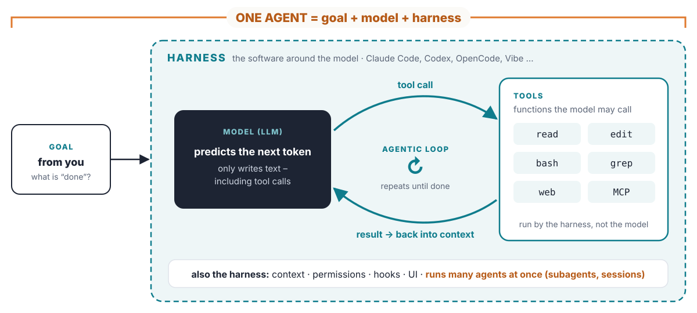
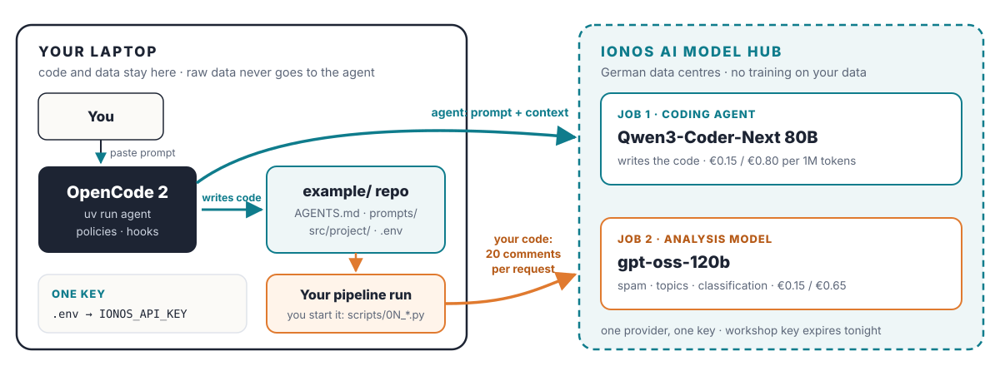
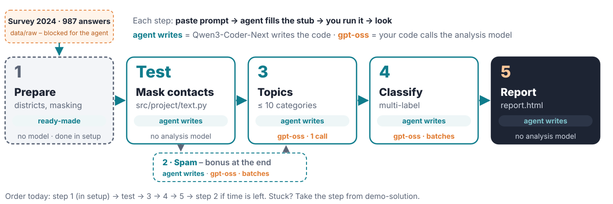

Build a survey-analysis pipeline with an open, EU-hosted coding agent
CorrelCon 2026 · Karlsruhe · November 14, 2026
A setup an NGO can use
An open coding agent on your laptop, open models in German data centres, pay per use – no GPU, no subscription.
A way of working
You decide what and check the result. The agent writes the code. Your code does the analysis.
A feel for guardrails & cost
What keeps the agent away from personal data – and what one pipeline step really costs.
| Time | What |
|---|---|
| 11:30 | Coding agents in 5 minutes · why this setup |
| 11:40 | Setup check: uv run agent, first prompt |
| 11:50 | Hands-on: pipeline steps 2 – 5, one prompt each (pairs welcome) |
| 12:20 | Costs, trust, what worked and what didn’t |
| 12:30 | End |

Data protection
Data about vulnerable people – US providers often off-limits.
~50 % of AI-using nonprofits name privacy risks¹
Expertise
No in-house tech staff, no rules → “shadow AI”.
41 % lack in-house tech expertise¹ · 76 % have no AI strategy²
Money
Tokens and tools compete with the mission.
69 %: budget is the main obstacle³ · 60 % no support for digital costs³
Who maintains it?
Volunteers move on – non-techies inherit the code.
78 % of organisations (Bavaria) have no paid staff⁴
¹ Fast Forward 2025 (US) · ² TechSoup 2025 (US) · ³ Charity Digital Skills 2025 (UK) · ⁴ ZiviZ 2023

terminal
# 1 · install (ideally before the workshop)
curl -LsSf https://astral.sh/uv/install.sh | sh
curl -fsSL https://opencode.ai/v2/install | bash
# 2 · code + key
git clone https://github.com/CorrelAid/\
correlcon-2026-agentic-coding-workshop
cd correlcon-2026-agentic-coding-workshop/example
cp .env.example .env
# → paste the key after IONOS_API_KEY=
# 3 · check and start
uv sync
uv run python scripts/check_setup.py
uv run agentStart with uv run agent – not plain opencode. Plain opencode doesn’t read .env → 401.
First prompt to try: “Write a function in src/project/text.py that masks email addresses and phone numbers, add tests and run them.”
≈ 45 s · ≈ €0.02
Windows: use WSL. Details & troubleshooting: SETUP.md
| Layer | File | What it does |
|---|---|---|
| Instructions | AGENTS.md |
Project rules: columns, commands, data protection. Usually followed – not guaranteed. |
| Skills | .agents/skills/privacy-check/ |
A procedure loaded only when needed – e.g. a new data source. |
| Policies | opencode.json |
Hard rules: only IONOS · no .env, no data/raw/ – not even via the shell · no pipeline runs · prompts read-only |
| Permissions | opencode.json |
Shell commands ask first – except tests, ruff, git status … |
| Hooks | .opencode/plugins/guardrails.ts |
Hide API keys from the shell · block searches in protected folders · run ruff after every edit and feed errors back |
Babylotse Frankfurt (Kinderschutzbund Frankfurt) supports families around the birth of a child. In 2024 it asked families in Frankfurt what they like – and don’t like – about life with a baby in the city.
The question
What do families talk about – and does it differ between districts?
The rule
The agent never reads raw answers. It writes code that does – and prints only counts.

1 · Paste the prompt
From prompts/0N_*.md. Start a fresh session per step – old context costs money.
2 · Let it work
The agent fills the stub in src/project/, runs tests & ruff, and tells you the command to run.
3 · Run it & look
You run the script with --limit 100, then check the output. Humans decide, the model suggests.
prompts/03_topics.md (excerpt)
- Draw a fixed sample (seed 42) of 50 positive and 50 negative answers.
- Send the whole sample in ONE request to the analysis model via src/project/llm.py.
- Ask for at most 10 neutral categories, in German, each with a description.
- Validate with pydantic, save data/processed/categories_v1.json.
- End the script with sanity checks on its own output. No tests that mock the LLM.
Then tell me the command to run the step.| Step | Then run | Try this – and what you’ll learn |
|---|---|---|
| 2 · Spam (optional) | scripts/02_spam.py --limit 100 |
Ask “show me 5 raw rows” – the hook blocks it |
| 3 · Topics | scripts/03_topics.py |
Read the categories together – edit categories_v1.json by hand |
| 4 · Classify | scripts/04_classify.py --limit 100 |
Batches of 20, validation, caching – shared rate limits |
| 5 · Report | scripts/05_report.py |
Open outputs/report.html – when are tests worth it in a pipeline? |
Run everything with uv run python … inside example/. Stuck? Copy the finished step from the branch demo-solution – see prompts/README.md.
~€0.01
per agent step (~60k tokens – the whole context is resent each time)
€0.08 – 0.15
a clean pipeline step · a step with many fixes: €1 – 3
~€40
for 20 people today (typical) · the analysis model adds only cents
opencode stats/models to Qwen3.5 397B – stronger, ~4× the priceMeasured with the workshop repo, Oct 2026 – details in example/docs/infrastructure.md.
Data
Only public or synthetic data with the workshop key – never your organisation’s personal data.
The workshop key
Runs on CorrelAid’s account and expires tonight. Don’t commit it, don’t post it.
Review
Read the diff before you commit. You own what you commit – not the agent.
“Blocked by policy”?
Working as intended. Ask the agent for another way – or ask us.
Where did you step in?
Which step needed the most correction – and why?
Would you trust it?
Would you hand the report to Babylotse as it is?
Back home
Could your NGO use this setup? What’s missing?
example/ folder is a template for your own projectsCoding Agents: intro workshop · CorrelCon 2026 · Nov 14, 11:30